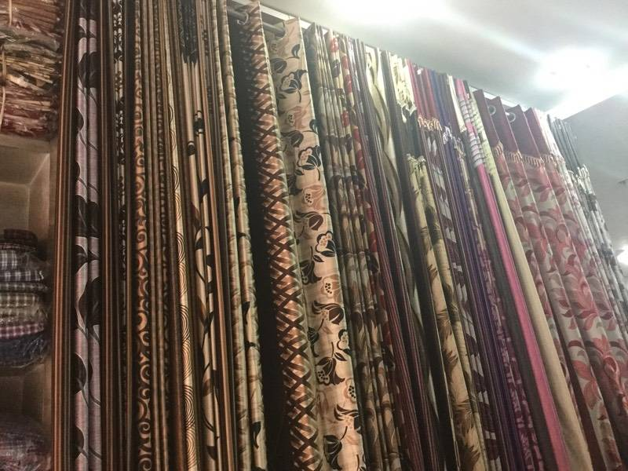

|
MALHOTRA TEXTILES
-Make your house a home sweet home |
 |
| Home |
About Us |
Collections |
Directions |
Reviews |
 |
|
A 'handloom' is a loom that is used to weave cloth without the use of any electricity. Hand weaving is done on pit looms or frame looms generally located in weavers' homes. Weaving is primarily the interlacing of two sets of yarn – the warp (length) and the weft (width).
What is the purpose of handloom?
The Handloom sector plays a very important role in the country's economy. It is one of the largest economic activities providing direct employment to over 65 lakh persons engaged in weaving and allied activities |
|  |
|
Cotton yarn can also be spun on machines. The yarn is spun in spinning mills where all the activities of de-seeding, cleaning, ginning and spinning are centralized and mechanized. Yarn is spun on to cone shaped holders and is referred to as ‘cone yarn’. Yarn spun on machines is called mill spun yarn and fabric woven on the hand loom with mill spun yarn is referred to as “handloom fabric”. Fabric woven with hand spun yarn on the handloom is referred to as “khadi fabric”. Today, most of the weavers are weaving handloom products with mill spun yarn. |
| For more details: you can contact us directly |